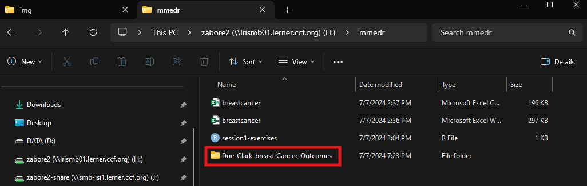
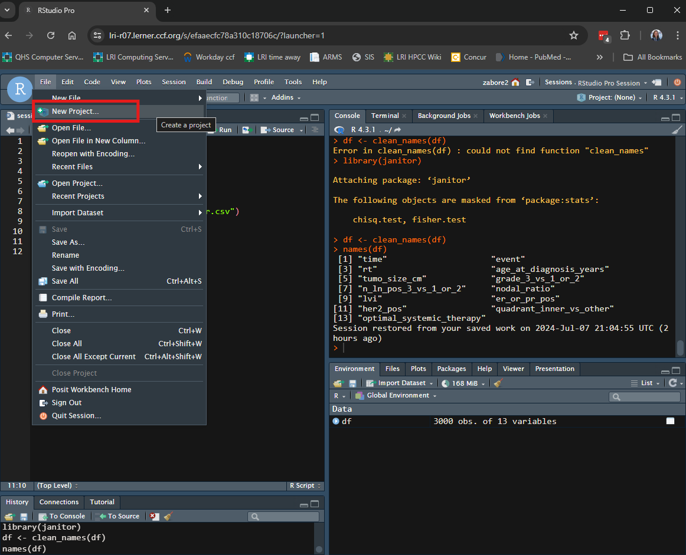
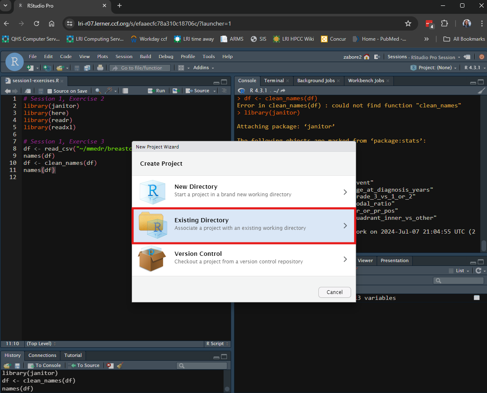
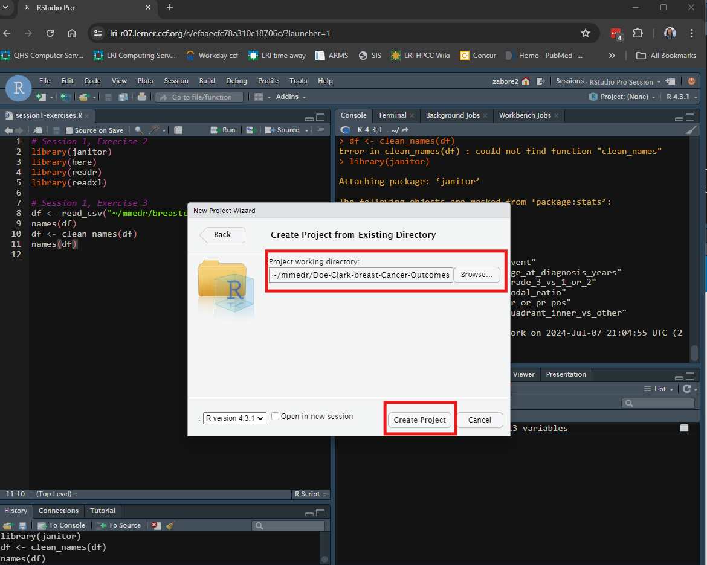
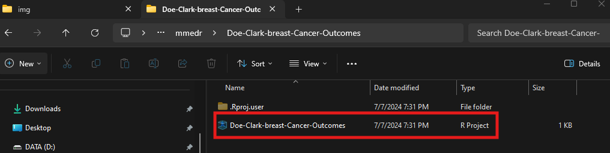
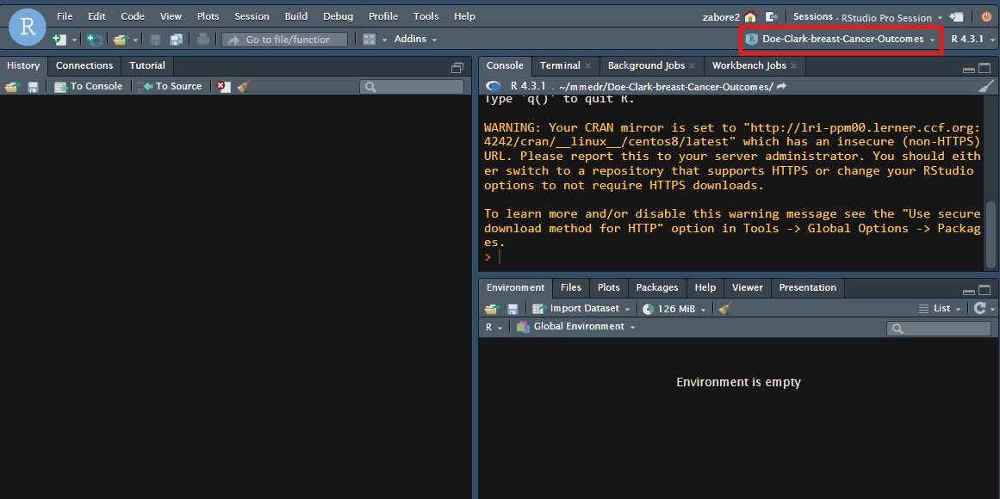
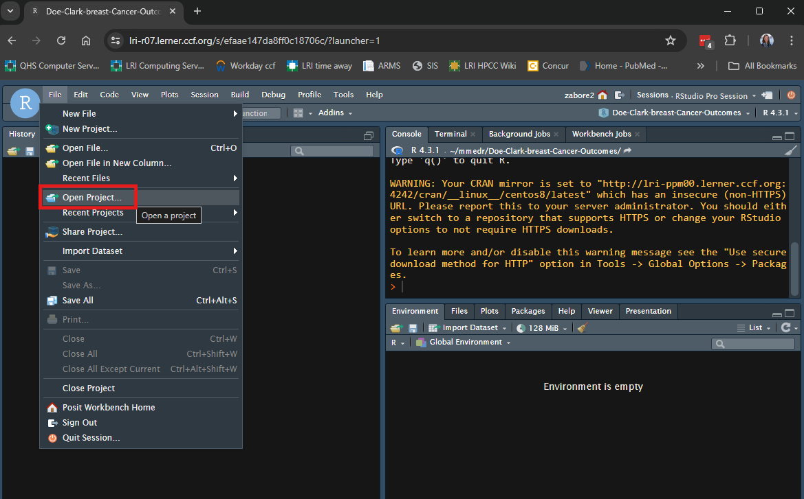
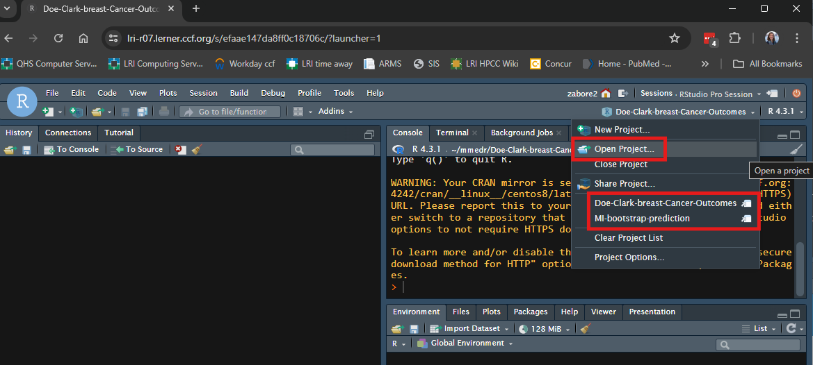
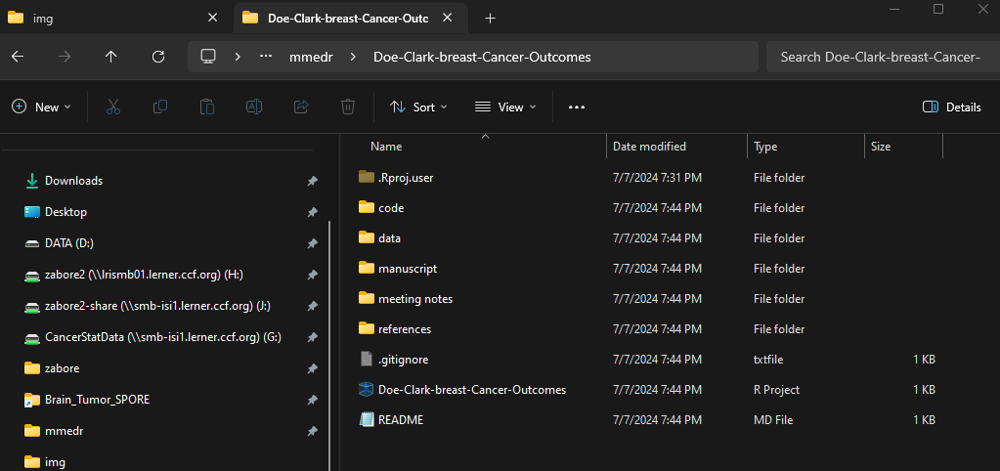
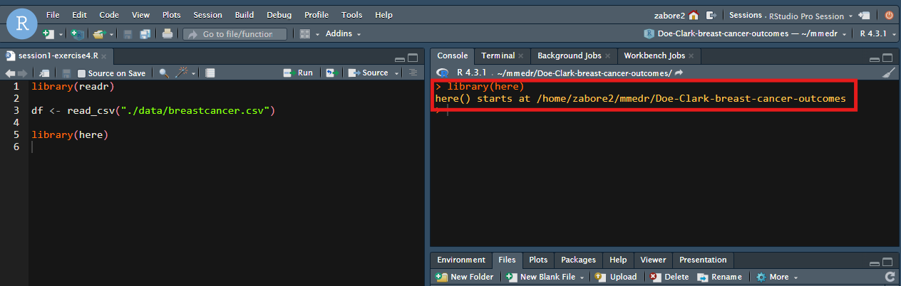

library(readr)
df <- read_csv("./data/breastcancer.csv")Reproducility
In this part of Session 1, we will discuss the importance of reproducibility in statistical programming, and tools available in R to promote reproducible research.
We can make the statistical analysis components of our scientific research more reproducible using a variety of tools in R.
R projects
One challenge in scientific research is organization. Keeping track of data, code, sources of information, connections between data sets and images, connections between lab equipment and the data they produce, and even basic file organization. We can’t tackle all of these issues in R, but we can address some of them.
The first area we can focus on is starting with a project oriented workflow.
First, create a folder where everything related to one project will be stored. In this case, let’s consider a “project” to be a single scientific question of interest. Every document related to this question of interest, from lab notes to plots to code for statistical analyses, manuscript drafts, and references will be stored in this one folder. The folder should be created in a backed-up location on your computer.
Next, give the folder a meaningful name. This will be unique to everone’s line of work, but you should consider devising a system that you will use for all of your projects. For example, in my collaborative work I always name my project folders with PILastName-FellowLastName-TwoToThreeWordDescription. In this way I always know what pattern to look for when I’m trying to locate a specific project folder in the future.
Let’s say I’m doing a project for this class with an investigator named Jane Doe with a fellow named Bob Clark about breast cancer outcomes, I may create a project folder named “Doe-Clark-breast-cancer-outcomes” under my “mmedr” folder on my home network drive.

Then, create an RStudio project in this location. An RStudio project is an easy way to divide your work into multiple contexts, each with their own working directory and source documents.
To create an RStudio project in an existing directory, in RStudio go to File > New Project.

Select “Existing directory” from the pop-up box.

Then use “Browse” to navigate to the desired folder, and select “Create Project”.

Your RStudio session will then automatically switch to your new R project.
You will notice two things.
- There is a new .Rproj file in your project folder with the same name as the folder.

- Now you have a fresh RStudio session, with the name of the project indicated in the top right corner.

Project workflow and organization
Now every time you want to work on an analysis for this project, you will first open the RStudio project.
You can do this in one of several ways.
- On Posit Workbench or your personal computer, in RStudio go to File > Open Project

- On Posit Workbench or your personal computer, in RStudio click on the arrow next to the project name in the top right corner and either select “Open Project” or choose from the list of recently opened project names.

- On your personal computer, double click on the R project file in your project folder, which will open a new RStudio session.
Benefits of working inside an RStudio project include:
- Starting a fresh R session every time the project is opened
- The current working directory is set to the project directory
- Previously open R scripts are restored at project startup
- Other RStudio settings are restored
- Multiple RStudio sessions can be open at one time, running independently in different RStudio projects
It is beneficial to create a standard set of sub-folders using standard naming conventions across projects. This will depend on the type of materials you typically have, but here is an example of my personal structure:

- code: contains all of my R code files
- data: contains all of my datasets
- manuscript: contains all manuscript drafts
- meeting-notes: contains any notes from meetings
- references: contains PDFs of references as well as any reference manager files
Then I will name documents in standard ways and manage versions over time by appending the date in yyyy-mm-dd format so that they sort appropriately. I use caution to name files in standard ways using all lowercase letters, dashes between words, and letters or numbers to keep files in order if they need to be used in a certain order. File and folder names with spaces are not readable by all computers, and should be avoided.
{here} package
While use of an RStudio project does automatically set the working directory to the project directory, the relative file paths will still not be completely portable. For example, if I were to move the entire project folder “Doe-Clark-breast-cancer-outcomes” to a different location on my computer, any file paths that were relative to the previous location would be broken.
For example, the location of my project folder is: /home/zabore2/mmedr/Doe-Clark-breast-Cancer-Outcomes
Under that project folder, I have a folder called “data”. I have copied “breastcancer.csv” into this sub-folder.
To read in the data in the RStudio project, use:
This is a relative filepath to the full filepath “/home/zabore2/mmedr/Doe-Clark-breast-cancer-outcomes/data/breastcancer.csv”. The code file I’m working from is in a parallel sub-folder named “code”, so I have to go up one level to the main project folder (“.”) then back down into the data folder (“/data”) and then reference the file name (“/breastcancer.csv”). This is a nice short relative file path, but if I were to move this project off my home directory and onto a shared network drive, for example, any such relative filepaths would then be broken. Also, coding conventions are not the same across different operating systems, so these relative paths used in Linux will not work on Windows, for example.
To avoid this, we can take advantage of the {here} package.
First, install and load the {here} package.
install.packages("here") # Already installed on Posit Workbench
library(here)When you run library(here) in your RStudio project, you will automatically see the location where “here” starts in the console:

And you can now refer to the same filepath relative to the main project folder, separating as many levels of sub-folder names as needed by commas, as follows:
df <- read_csv(here("data", "breastcancer.csv"))Now this code would work both across computers with different operating systems, and also if the project folder is moved to any other location.
This avoids issues of reproducibility related to file paths.